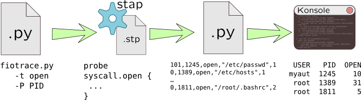

Pre- and post-processing
Despite the flexibility of the dynamic tracing languages, it lacks of common tools to create user-friendly interfaces like command line options to generate different filtering with predicates, sorting and omitting columns, making scripts are hard to reuse. For example, iosnoop from DTraceToolkit allows to generate user-printable timestamps or not with -v option, filter device or PID with -d and -p options, and a series of options that enable or disable showing various columns.
In such cases we can use general purpose scripting language such as Python, Perl or even shell-script to generate dynamic tracing on-the fly, run it, read its output in some form and than print it in human-readable form:

For example, let's add the following capabilities to our open() system call tracer: customizable per-pid and per-user filters, and also make it universal -- capable running in DTrace and SystemTap.
#!/usr/bin/env python
import sys, os, subprocess, platform
from optparse import OptionParser
# ----------------------------
# opentrace.py - Trace open syscalls via SystemTap or DTrace
# supports filtering per UID or PID
optparser = OptionParser()
optparser.add_option('-S', '--stap', action='store_true',
dest='systemtap', help='Run SystemTap')
optparser.add_option('-D', '--dtrace', action='store_true',
dest='dtrace', help='Run DTrace')
optparser.add_option('-p', '--pid', action='store', type='int',
dest='pid', default='-1', metavar='PID',
help='Trace process with specified PID')
optparser.add_option('-u', '--uid', action='store', type='int',
dest='uid', default='-1', metavar='UID',
help='Filter traced processes by UID')
optparser.add_option('-c', '--command', action='store', type='string',
dest='command', metavar='CMD',
help='Run specified command CMD and trace it')
(opts, args) = optparser.parse_args()
if opts.pid >= 0 and opts.command is not None:
optparser.error('-p and -c are mutually exclusive')
if (opts.pid >= 0 or opts.command is not None) and opts.uid >= 0:
optparser.error('-p or -c are mutually exclusive with -u')
if opts.systemtap and opts.dtrace:
optparser.error('-S and -D are mutually exclusive')
if not opts.systemtap and not opts.dtrace:
# Try to guess based on operating system
opts.systemtap = sys.platform == 'linux2'
opts.dtrace = sys.platform == 'sunos5'
if not opts.systemtap and not opts.dtrace:
optparser.error('DTrace or SystemTap are non-standard for your platform, please specify -S or -D option')
def run_tracer(entry, ret, cond_proc, cond_user, cond_default,
env_bin_var, env_bin_path,
opt_pid, opt_command, args, fmt_probe):
cmdargs = [os.getenv(env_bin_var, env_bin_path)]
if opts.pid >= 0:
cmdargs.extend([opt_pid, str(opts.pid)])
entry['cond'] = ret['cond'] = cond_proc
elif opts.command is not None:
cmdargs.extend([opt_command, opts.command])
entry['cond'] = ret['cond'] = cond_proc
elif opts.uid >= 0:
entry['cond'] = ret['cond'] = cond_user % opts.uid
else:
entry['cond'] = ret['cond'] = cond_default
cmdargs.extend(args)
proc = subprocess.Popen(cmdargs, stdin=subprocess.PIPE)
proc.stdin.write(fmt_probe % entry)
proc.stdin.write(fmt_probe % ret)
proc.stdin.close()
proc.wait()
if opts.systemtap:
entry = {'name': 'syscall.open',
'dump': '''printf("=> uid: %d pid: %d open: %s %d\\n",
uid(), pid(), filename, gettimeofday_ns());'''}
ret = {'name': 'syscall.open.return',
'dump': '''printf("<= uid: %d pid: %d ret: %d %d\\n",
uid(), pid(), $return, gettimeofday_ns());'''}
run_tracer(entry, ret, cond_proc = 'pid() != target()',
cond_user = 'uid() != %d', cond_default = '0',
env_bin_var = 'STAP_PATH',
env_bin_path = '/usr/bin/stap',
opt_pid = '-x', opt_command = '-c',
args = ['-'],
fmt_probe = ''' probe %(name)s {
if(%(cond)s) next;
%(dump)s
}
''' )
elif opts.dtrace:
# In Solaris >= 11 open is replaced with openat
is_sol11 = int(platform.release().split('.')[-1]) >= 11
sc_name = 'openat*' if is_sol11 else 'open*'
fn_arg = 'arg1' if is_sol11 else 'arg0'
entry = {'name': 'syscall::%s:entry' % sc_name,
'dump': '''printf("=> uid: %%d pid: %%d open: %%s %%lld\\n",
uid, pid, copyinstr(%s), (long long) timestamp); ''' % fn_arg}
ret = {'name': 'syscall::%s:return' % sc_name,
'dump': '''printf("<= uid: %d pid: %d ret: %d %lld\\n",
uid, pid, arg1, (long long) timestamp);'''}
run_tracer(entry, ret, cond_proc = 'pid == $target',
cond_user = 'uid == %d', cond_default = '1',
env_bin_var = 'DTRACE_PATH',
env_bin_path = '/usr/sbin/dtrace',
opt_pid = '-p', opt_command = '-c',
args = ['-q', '-s', '/dev/fd/0'],
fmt_probe = ''' %(name)s
/%(cond)s/
{
%(dump)s
}
''' )
First half of this script is an option parser implemented with OptionParser Python class and intended to parse command-line arguments, provide help for them and check their correctness -- i.e. mutually-exclusive options, etc. Second half of the script is a run_tracer() function that accepts multiple arguments and if-else statement that depending on chosen dynamic tracing system, generates parameters for run_tracer() as follows:
| Parameter | Description | SystemTap | DTrace |
entry |
entry probe name and body |
syscall.open |
syscall::open*:entry or syscall::openat*:entry depending on Solaris version |
ret |
return probe name and body |
syscall.open.return |
Similiar to entry probe, but with name return |
cond_proc |
predicate for picking a process |
pid() != target() |
pid == $target |
cond_user |
predicate template for per-user tracing |
uid() != %d |
uid == %d |
cond_default |
always-true predicate |
0 |
1 |
env_bin_var |
environment option used to override path to DTrace/SystemTap binary |
STAP_PATH |
DTRACE_PATH |
env_bin_path |
default path to DTrace/SystemTap binary |
/usr/bin/stap |
/usr/sbin/dtrace |
opt_pid |
option for tracing tool accepting PID |
-x |
-p |
opt_pid |
option for tracing tool accepting new command |
-c |
-c |
args |
arguments to read script from stdin |
- |
-q -s /dev/fd/0 |
fmt_probe |
format string for constructing probes | ||
So this script generate predicate condition uid == 100 for the following command-line:
# python opentrace.py -D -u 100
Post-processing is intended to analyse already collected trace file, but it might be run in parallel with tracing process. However, it allows to defer trace analysis -- i.e. collect maximum data as we can, and then cut out irrelevant data, showing only useful. This can be performed using either Python, Perl, or other scripting languages or even use statical analysis languages like R. Moreover, post-processing allows to reorder or sort tracing output which can also help to avoid data mixing caused by per-process buffers.
The next script will read opentrace.py output, merge information from entry and return probes, and convert user-ids and time intervals to a convenient form. Like in dynamic tracing languages we will use an associative array states which is implemented as dict type in Python to save data from entry probes and use process ID as a key.
#!/usr/bin/env python
import re
import sys
# ----------------------------
# openproc.py - Collect data from opentrace.py and merge :entry and :return probes
# Open trace file or use stdin
try:
inf = file(sys.argv[1], 'r')
except OSError as ose:
print ose
print '''openproc.py [filename]'''
sys.exit(1)
except IndexError:
inf = sys.stdin
# Convert time to human time
def human_time(ns):
ns = float(ns)
for unit in ['ns', 'us', 'ms']:
if abs(ns) < 1000.0:
break
ns /= 1000.0
else:
unit = 's'
return "%.2f %s" % (ns, unit)
# Parse /etc/passwd and create UID-to-USERNAME map
uid_name = lambda user: (int(user[2]), user[0])
users = dict([uid_name(user.split(':'))
for user in file('/etc/passwd')])
# Per-PID state - tuples (start time, file name)
state = {}
# Regular expressions for parsing tracer output
re_entry = re.compile("=> uid: (\d+) pid: (\d+) open: (.*?) (\d+)")
re_return = re.compile("<= uid: (\d+) pid: (\d+) ret: (-?\d+) (\d+)")
for line in inf:
if line.startswith('=>'):
# :entry probe, extract start time and filename
m = re_entry.match(line)
_, pid, fname, tm = m.groups()
state[int(pid)] = (int(tm), fname)
elif line.startswith('<='):
# :return probe, get return value, timestamp and print information
m = re_return.match(line)
uid, pid, ret, tm = map(int, m.groups())
if pid not in state:
continue
status = 'FD %d' % ret if ret >= 0 else 'ERROR %d' % ret
print 'OPEN %s %d %s => %s [%s]' % (users.get(uid, str(uid)),
pid, state[pid][1], status,
human_time(tm - state[pid][0]))
del state[pid]
If we pipe opentrace.py output to this script, we can get similar data:
# python opentrace.py -c 'cat /tmp/not_exists' |
python openproc.py
cat: cannot open /tmp/not_exists: No such file or directory
[...]
OPEN root 3584 /tmp/not_exists => ERROR -1 [10.17 us]
[...]
Warningsystem() calls an external program, for example to parse /etc/passwd and get user name. However, it will cost much more, and if this call will introduce more open() calls (which it will obviously do), we will get more traced calls and a eternal loop.